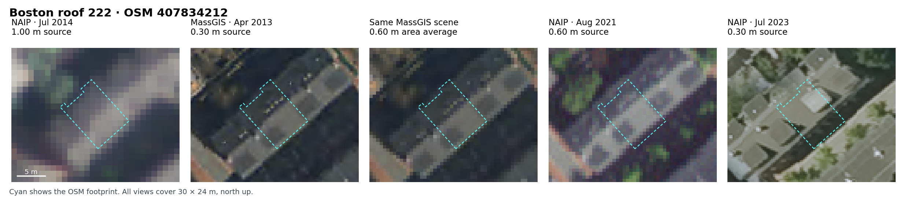
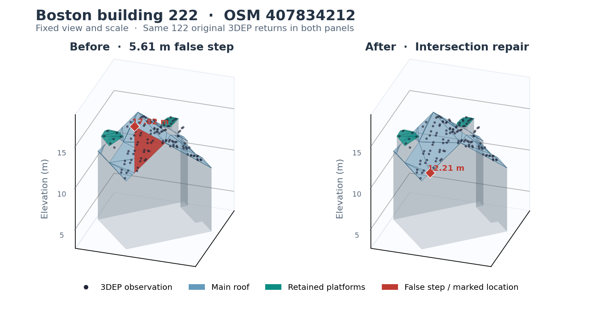

分辨率与尖墙试验
Boston 和 Washington DC 的历史航片用于分辨率对照。单独验证 222 的主坡尖墙修正。
影像清晰度与屋面选择
30 厘米让 57 栋获得光学信号，历史 1 米 NAIP 为 18 栋。 各档影像下，旧评分器的屋面选择一致。
使用 Boston 2013 年 MassGIS 30 厘米和 DC 2013 年 OCTO 16 厘米航片。影像按固定地面范围裁剪，原始分辨率、有效像素和波段可用性随输入保留。屋面重放的分析网格最细为 25 厘米。

影像来源 MassGIS / USGS、DC GIS OCTO（CC BY 4.0）和 USDA NAIP。裁剪并在需要时降采样。
57 栋有冻结候选且可留点比较。各组复用点云、足迹、候选面和旧评分网络，唯一变化是新增光学项。
| 对照 | 有光学信号 | 改选栋数 | 留点残差 · 米 |
|---|---|---|---|
| 关闭新增影像项 | 0 | 0 | 0.517 |
| 历史 NAIP · 1 米 | 18 | 0 | 0.517 |
| 当地航片 · 降到 1 米 | 18 | 0 | 0.517 |
| 当地航片 · 降到 60 厘米 | 39 | 0 | 0.517 |
| 当地航片 · 30 厘米 | 57 | 0 | 0.517 |
| 当地航片 · 本实验最高档 | 57 | 0 | 0.517 |
留点残差包含树冠回波，且旧主屋面模型曾用完整点云。表格只衡量候选重放和观测一致性。屋顶几何精度仍需独立三维验证。
222 的尖墙修复
按两坡交线修正边缘窄区，原有假台阶的最大高差由 5.61 米减至 0.026 米。两处由 3DEP 支持的平台都保留。修正后重新生成墙面，并检查外墙和台阶墙覆盖。

H100 训练与影像适配
H100 完成 120 步硬件短训、BF16 和 FP32 推理测试。真实航片随后训练 12 轮，按地理块分成 1564 个训练、314 个验证和 309 个测试窗口。留出影像的局部遮罩 RGB RMSE 为 0.086，可见像素均值基线为 0.123，按 [0,1] 计。
训练任务是恢复遮罩影像。上方屋面重放使用旧的冻结评分器，屋面与墙面的修正另由点云支撑。下载试验摘要